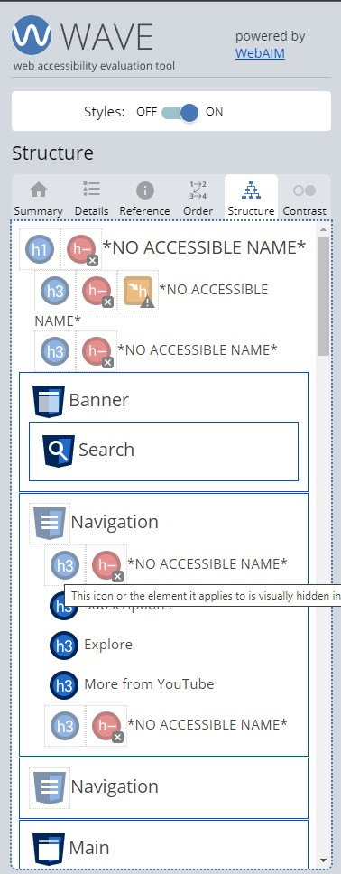

The Website page im reviewing is the Youtube Home Page
I will be showing the WAVE results and presenting video of my navigation the page with
only keybaord and then with the windows Narrator.
Errors: -Images missing alt -Contrast errors -Empty Headings -Empty form labels -Empty buttons
The structure was about what i was expecting expect i was expecting thje side tab to be created first